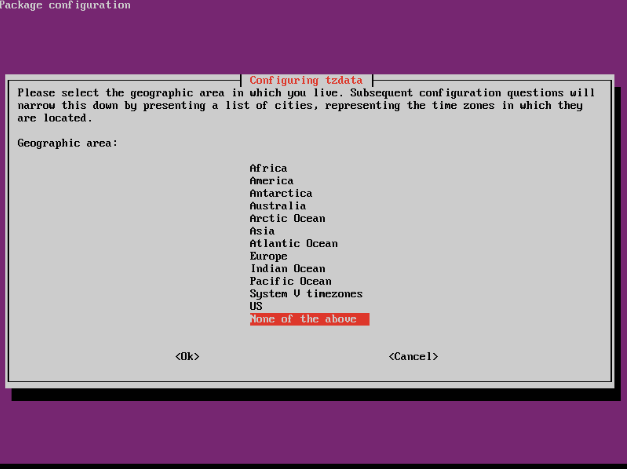

Los dos sistemas de gestión de software más comunes fueron iniciados por dos de las distribuciones de Linux más populares: Red Hat y Debian. Ambos sistemas ofrecen funcionalidades similares, incluyendo la capacidad de descargar e instalar manualmente un programa de software, así como automatizar el proceso. Si bien algunos pueden argumentar que un sistema es mejor que el otro, la discusión es en su mayoría irrelevante, ya que la mayoría de los administradores generalmente no tienen la opción de elegir qué sistema de gestión de software está disponible para su distribución.
Aunque existe la posibilidad de que solo necesites aprender un sistema (el que se usa en tu distribución de Linux), conocer ambos sistemas te proporciona la flexibilidad de poder gestionar software en muchas distribuciones de Linux diferentes. La buena noticia es que una vez que entiendes un sistema, comprender el otro no es demasiado difícil.
Otra distribución de Linux, SUSE, utiliza el sistema de gestión de paquetes desarrollado por Red Hat, así como su propio sistema de gestión de paquetes llamado Zypper. En este capítulo, aprenderás sobre la gestión de paquetes por línea de comandos de Red Hat, Debian y SUSE.
24.2 Gestión de paquetes RPM
El sistema de gestión de paquetes de Red Hat se basa en el formato de archivo utilizado para empaquetar los archivos de software dentro de esa distribución, conocido como RPM Package Manager. Aunque fue inventado en Red Hat, RPM se utiliza para gestionar software en muchas distribuciones diferentes y es el sistema de gestión de software base definido por la Linux Standards Base.
Considera esto
Originalmente, este sistema de gestión de software se llamaba simplemente RPM, o Red Hat Package Manager. Parece extraño que ahora se le conozca como RPM Package Manager, ya que el "PM" en RPM originalmente significaba "Package Manager". En cierto sentido, es similar a referirse a un cajero automático como "máquina ATM" cuando ATM significa "Automated Teller Machine".
En realidad, RPM ya no significa "Red Hat Package Manager". Cuando RPM se convirtió en parte de la Linux Standards Base (LSB), se le cambió el nombre a RPM Package Manager para evitar incluir "Red Hat" en su nombre. Esto se debe principalmente a que la LSB intenta ser lo más neutral posible en lo que respecta a las distribuciones de Linux.
Típicamente, RPM Package Manager se conoce simplemente como RPM.
Los archivos RPM están disponibles en dos formatos: archivos .src.rpm y archivos .rpm. A menos que estés compilando el software tú mismo o viendo el código fuente del software, no necesitas preocuparte por los archivos .src.rpm. Estos archivos contienen el código fuente que se utiliza para construir los archivos binarios .rpm. Los archivos binarios .rpm son los que contienen el código compilado que está listo para usar.
Los archivos utilizados por RPM tienen una convención de nomenclatura específica para ayudar a identificar el paquete, su número de versión, su identificador de lanzamiento y para qué arquitectura se compiló el software. Por ejemplo, si un archivo se llamara:
x3270-x11-3.3.6-10.5.el6.i686.rpm
Entonces se podría extraer información crítica solo del nombre del archivo:
El nombre del paquete puede incluir un guion. El nombre termina donde comienza el número de versión; el número de versión siempre es un número delimitado por decimales.
Número de versión
x3270-x11-3.3.6-10.5.el6.i686.rpm
Inmediatamente después del nombre del paquete y del guion que le sigue, se encuentra el número de versión. Este número de versión es establecido por el desarrollador original del software.
Identificador de lanzamiento
x3270-x11-3.3.6-10.5.el6.i686.rpm
Después del guion posterior al número de versión, se encuentra el identificador de lanzamiento. Los identificadores de lanzamiento son elegidos por el empaquetador (no por los desarrolladores del software) del software, que normalmente es el proveedor de la distribución.
Arquitectura
x3270-x11-3.3.6-10.5.el6.i686.rpm
Si un paquete contiene código binario, la arquitectura de la computadora en la que se compiló el código será la parte final del nombre del archivo antes de la extensión .rpm. Existen varios tipos de arquitectura:
Código
Arquitectura
noarch
Paquetes que no contienen código binario, como aquellos que pueden contener solo archivos de script
src
Paquetes que no han sido compilados
i686
Paquetes compilados para ejecutarse en modo de 32 bits en un procesador Pentium 4 o posterior
x86_64
Paquetes compilados para ejecutarse en modo de 64 bits en un procesador AMD de 64 bits o un procesador compatible con Intel EM64T de 64 bits
24.2.1 Consultas RPM
Cualquier usuario puede realizar consultas RPM para mostrar información sobre paquetes que están actualmente instalados en el sistema o sobre archivos RPM que aún no se han instalado (ya sea en el sistema de archivos o accesibles mediante una URL). La diferencia entre hacer una consulta sobre un paquete instalado y un archivo RPM es doble:
Para consultar un paquete que no está instalado, usa la opción -p FILE. El argumento FILE especifica la ruta a un archivo .rpm local o la URL de un archivo .rpm en internet (ftp o http).
Para consultar un paquete instalado, usa solo el nombre del paquete.
Nota
Algunos de los archivos necesarios para los siguientes ejemplos no están disponibles en nuestro entorno virtual. Por lo tanto, algunos de los ejemplos pueden no coincidir con la salida en la VM.
En el laboratorio se proporciona práctica adicional para la gestión de paquetes RPM.
Para realizar cualquier consulta RPM, siempre usa la opción -q con el comando rpm. Para consultar información básica del paquete, usa la opción -i:
[sysadmin@localhost ~]$ rpm -qi bash
Name : bash
Version : 4.2.46
Release : 31.el7
Architecture: x86_64
Install Date: Tue Dec 4 14:38:13 2018
Group : System Environment/Shells
Size : 3667773
License : GPLv3+
Signature : RSA/SHA256, Mon Nov 12 14:21:49 2018, Key ID 24c6a8a7f4a80eb5
Source RPM : bash-4.2.46-31.el7.src.rpm
Build Date : Tue Oct 30 17:09:33 2018
Build Host : x86-01.bsys.centos.org
Relocations : (not relocatable)
Packager : CentOS BuildSystem <http://bugs.centos.org>
Vendor : CentOS
URL : http://www.gnu.org/software/bash
Summary : The GNU Bourne Again shell
Description :
The GNU Bourne Again shell (Bash) is a shell or command language
interpreter that is compatible with the Bourne shell (sh). Bash
incorporates useful features from the Korn shell (ksh) and the C shell
(csh). Most sh scripts can be run by bash without modification.
Para realizar una consulta similar en el archivo RPM de bash, se añadiría la opción -p junto con las opciones -q y -i:
¿Dónde se encuentra este archivo .rpm? En la mayoría de las distribuciones, los archivos .rpm no se almacenan por defecto en los sistemas de archivos locales. Se pueden encontrar en el medio de instalación (DVD o CD ROM de instalación) o en línea en servidores llamados repositorios.
Recuerda siempre que las consultas RPM requieren el uso de la opción -q para paquetes instalados y -qp para archivos de paquetes no instalados. Hay muchos tipos diferentes de consultas que se pueden realizar, como se describe en la siguiente tabla:
Opción
Propósito
-a
Listar todos los paquetes instalados actualmente en el sistema
-c
Mostrar una lista de archivos de configuración que pertenecen al paquete
-d
Listar los archivos de documentación que pertenecen al paquete
-i
Mostrar la información del paquete
-K
Verificar la integridad del paquete
-l
Listar todos los archivos en el paquete
--provides
Listar las capacidades que proporciona este paquete
-R
Listar las capacidades que requiere este paquete
--scripts
Listar los scripts que se utilizan antes y después de la instalación del paquete
-s
Mostrar el estado de cada archivo del paquete como normal, no instalado o reemplazado
Consulta de Scripts
Es una buena idea consultar un paquete para ver los scripts que ejecutará antes de instalar un archivo RPM de una fuente de terceros. Debido a que se requieren privilegios de root por defecto para instalar o eliminar paquetes RPM del sistema, estos scripts se ejecutarán como root durante la instalación o eliminación de un paquete del sistema; esto es potencialmente peligroso, ya que los scripts ejecutados como root pueden realizar cualquier cambio en el sistema.
Antes de instalar el paquete x3270-x11, el administrador podría ver los scripts para asegurarse de que no son peligrosos ejecutando el siguiente comando:
[sysadmin@localhost ~]$ rpm -qp --scripts x3270-x11-3.3.6-10.5.el6.i686.rpm
postinstall scriptlet (using /bin/sh):
cd /usr/share/x3270/fonts && /usr/bin/mkfontdir
touch --no-create /usr/share/icons/hicolor
if [ -x /usr/bin/gtk-update-icon-cache ]; then
gtk-update-icon-cache -q /usr/share/icons/hicolor
fi
postuninstall scriptlet (using /bin/sh):
if [ "$1" = "0" ]; then
cd /usr/share/x3270/fonts && /usr/bin/mkfontdir
fi
touch --no-create /usr/share/icons/hicolor
if [ -x /usr/bin/gtk-update-icon-cache ]; then
gtk-update-icon-cache -q /usr/share/icons/hicolor
fi
La salida de esta consulta muestra que hay un script postinstalación y un script postdesinstalación para este paquete. En este caso, estos scripts no son peligrosos, ya que están actualizando fuentes e iconos que el paquete puede usar.
Consulta de la Integridad de un Paquete
Si un administrador está preocupado por la seguridad del sistema, no solo debe consultar un paquete para ver sus scripts, sino también consultar la integridad de un paquete usando la opción -K. Para usar esta opción en un archivo .rpm, importa el archivo de clave pública que es distribuido por la misma organización que empaquetó y distribuyó el archivo .rpm.
Típicamente, las claves públicas para la distribución se incluyen automáticamente con el sistema. Por ejemplo, en una distribución derivada de Red Hat, los archivos de clave pública se almacenan en el directorio /etc/pki/rpm-gpg. Un administrador puede importar estas claves a la base de datos RPM con el comando:
Una vez que se han importado las claves, se puede verificar la integridad de un paquete. Por ejemplo, para verificar la integridad del paquete x3270-x11, un administrador podría ejecutar el siguiente comando:
Fíjate que la única salida que está en mayúsculas es OK, lo que significa que el paquete no está corrupto. La siguiente salida tiene varias siglas en mayúsculas junto con NOT OK, lo que indica un paquete corrupto:
[sysadmin@localhost ~]$ rpm -qpK x3270-x11-3.3.6-10.5.el6.i686.rpm
x3270-x11-3.3-4.el7.x86_64.rpm: rsa sha1 (MD5) PGP MD5 NOT OK
Consulta de Paquetes Instalados
Existen varios métodos para determinar si un paquete está instalado. Si se conoce el nombre exacto del paquete, simplemente consulta el paquete por su nombre. Por ejemplo, para ver si el paquete bash está instalado, ejecuta:
Si el paquete está instalado, la salida será como el nombre original del archivo RPM sin la extensión .rpm. Si el paquete no está instalado, la salida lo indicará:
[sysadmin@localhost ~]$ rpm -q pickle
package pickle is not installed
El carácter global * puede ser útil si no se conoce el nombre exacto del paquete. Por ejemplo, si sabes que el nombre del paquete contiene python, pero no estás seguro del resto, entonces ejecuta el siguiente comando:
Para obtener una lista alfabética de todos los paquetes instalados, ejecuta el comando rpm -qa | sort. Para obtener una lista cronológica de todos los paquetes, ejecuta el comando rpm -qa --last.
24.2.2 Instalación de paquetes con rpm
Una dependencia es un paquete de software (o una característica) que es necesario para que otro paquete se instale y funcione correctamente. Cuando un administrador usa el comando rpm para instalar un paquete de software .rpm, ese proceso fallará si las dependencias de ese paquete no están ya instaladas.
Por ejemplo, para instalar el paquete x3270-x11-3.3.6-10.5.el6.i686.rpm, ejecuta:
Si faltara alguna dependencia, el comando rpm fallaría y mostraría un mensaje de error como el siguiente:
[sysadmin@localhost ~]$ rpm -i x3270-x11-3.3.6-10.5.el6.i686.rpm
error: Failed dependencies:
libicuuc.so.42 is needed by x3270-x11-3.3.6-10.5.el6.i686
x3270 = 3.3.6 is needed by x3270-x11-3.3.6-10.5.el6.i686
Basado en la salida anterior, faltan un archivo de biblioteca u objeto compartido llamado libicuuc.so.42 y el paquete x3270 (versión 3.3.6). El archivo de biblioteca es un poco complicado ya que no está claro a qué paquete pertenece. Buscar en Internet usando el nombre del archivo de biblioteca revela que el paquete que falta necesario para instalar el archivo de biblioteca se llama libicu.
Es importante tener en cuenta que a veces un paquete y sus dependencias deben instalarse al mismo tiempo si existen dependencias circulares entre ellos. Una vez que se localizan los paquetes x3270 y libicu, el administrador los instalaría junto con el paquete x3270-x11 ejecutando un comando como el siguiente:
El sistema RPM utiliza una base de datos para rastrear las capacidades de cada paquete previamente instalado. Un archivo RPM contiene una lista de dependencias de paquetes. Antes de instalar un paquete RPM, el comando rpm compara esta información para determinar si se satisfacen las dependencias.
La mayoría de los administradores determinan las dependencias de los paquetes examinando la salida de una instalación fallida de un paquete RPM. Sin embargo, también es posible verificar los requisitos y las dependencias de un paquete por adelantado con la siguiente consulta rpm (se muestra una salida parcial):
Para ver lo que proporciona cada paquete, realiza una consulta con la opción --provides. La salida del siguiente comando demuestra que este paquete proporciona el paquete x3270 requerido con la versión igual a 3.3.6:
Ocasionalmente, un paquete necesita ser reinstalado, quizás porque falta un archivo de ese paquete. Normalmente, el comando rpm se negará a instalar un paquete que ya está instalado, pero se puede forzar añadiendo la opción --force. Por ejemplo, para reinstalar el paquete x3270, ejecuta el siguiente comando:
El comando rpm puede usarse para borrar (eliminar) paquetes del sistema con la opción -e. Sin embargo, pueden surgir problemas de dependencia. Si hubo problemas de dependencia cuando se instaló un grupo de paquetes, entonces también puede haber problemas de dependencia cuando se elimine ese grupo de paquetes.
Por ejemplo, si se intentara eliminar los paquetes x3270 o libicu sin eliminar primero el paquete x3270-x11, se produciría un error:
[sysadmin@localhost ~]$ rpm -e x3270 libicu
error: Failed dependencies:
x3270 = 3.3.6 is needed by (installed) x3270-x11-3.3.6-10.5.el6.i686
libicuuc.so.42 is needed by (installed) x3270-x11-3.3.6-10.5.el6.i686
En otras palabras, el comando rpm no permitirá que se borre un paquete si es un requisito de otro paquete. Si el paquete x3270-x11 se borrara primero, entonces los otros dos paquetes podrían borrarse.
En el caso de dependencias circulares, cuando los paquetes dependen entre sí, todos los paquetes se pueden eliminar con un solo comando rpm especificando todos los nombres de los paquetes como argumento:
Para actualizar un paquete con una nueva versión o un lanzamiento más reciente, usa el comando rpm con la opción -U o -F. Como fue el caso al instalar o eliminar paquetes, pueden surgir problemas de dependencia al actualizar paquetes. La instalación de un paquete actualizado a menudo requiere la instalación de actualizaciones de los paquetes de los que depende.
La opción -U puede usarse con el comando rpm para instalar o actualizar un paquete:
Por otro lado, al usar el comando rpm con la opción -F, el paquete solo se actualizará si el paquete ya está instalado; esto se llama "refrescar" el paquete:
El paquete del kernel es tan crítico que cuando hay una nueva versión disponible, debe instalarse en lugar de actualizarse o "refrescarse". Los archivos del kernel están organizados para permitir que coexistan múltiples versiones en el sistema simultáneamente. De esta manera, si se instala un kernel actualizado en tu sistema pero no funciona, simplemente reinicia el sistema y selecciona el kernel anterior del menú del cargador de arranque.
24.2.5 Uso de rpm2cpio
El comando rpm2cpio acepta un archivo .rpm como argumento (o lee datos en formato de paquete desde la entrada estándar) y genera un archivo cpio. Esta capacidad puede usarse para listar el contenido de un archivo .rpm o para extraer uno o más archivos del archivo .rpm original.
Por ejemplo, para listar el contenido del archivo telnet-server-0.17-47.el6_3.1.i686.rpm, ejecuta el siguiente comando. La salida muestra los archivos contenidos dentro del archivo .rpm y el número total de bloques de 512 KiB que esos archivos usarían si se extrajeran:
Crear cualquier directorio padre de los archivos contenidos en el archivo
Nota
Recuerda que el comando cpio es un comando de archivo que puede fusionar muchos archivos en un solo archivo.
El comando cpio se cubre con mayor detalle anteriormente en el curso.
Considera esto
¿Por qué usar el comando rpm2cpio? Considera una situación en la que un archivo de paquete clave se elimina accidentalmente del sistema. Reinstalar todo el paquete puede ser excesivo si solo se necesita un único archivo. Usando el comando rpm2cpio, el archivo que falta se puede extraer y copiar de nuevo al directorio apropiado.
24.3 Gestión de paquetes con yum
Si bien un administrador puede gestionar software directamente con el comando rpm, existen otros comandos de nivel superior disponibles que facilitan significativamente la gestión del software. El comando yum puede localizar y descargar paquetes en Internet y resolver dependencias automáticamente.
Las dependencias ocurren cuando un paquete (P1) depende de otros paquetes (P2, P3, P4) para funcionar correctamente. P2, P3 y P4 pueden tener sus propias dependencias (P5, P6, P7, P8), y así sucesivamente. ¡Resolver estas dependencias en cascada manualmente puede ser una tarea desalentadora!
Las dependencias circulares a veces son posibles cuando dos paquetes se requieren mutuamente. Por ejemplo, chicken.rpm requiere egg.rpm, pero egg.rpm requiere chicken.rpm. Aunque es posible resolver problemas de dependencia manualmente con el comando rpm, se pueden resolver automáticamente con el comando yum.
El comando yum puede realizar algunas operaciones que el comando rpm no puede. La gran ventaja del comando yum es que se puede configurar para descargar paquetes automáticamente y resolver las dependencias de los paquetes. Además, el comando yum puede mostrar información de paquetes que ni siquiera están en el sistema accediendo a estos datos desde un servidor llamado repositorio.
Típicamente, el comando yum se configura editando el archivo /etc/yum.conf y los archivos que se encuentran en el directorio /etc/yum.repos.d. Estos archivos de configuración se utilizan para especificar servidores (los repositorios) en Internet donde el comando yum puede obtener los archivos RPM automáticamente. Si el sistema no tiene la red habilitada o no tiene acceso a Internet, entonces no podrá usar los comandos yum para gestionar paquetes. En esas situaciones, los comandos rpm pueden usarse para la gestión de paquetes.
Una consulta rpm que no se mencionó anteriormente es la opción -f:
Esta consulta se utiliza para determinar qué paquete posee (o proporciona) el archivo /bin/bash. Esta consulta solo tiene éxito si el paquete bash ya está instalado en el sistema. Desafortunadamente, esto no es útil cuando se intenta encontrar el propietario del paquete para un archivo y ese paquete no está instalado en tu sistema, como suele ser el caso cuando se intentan resolver problemas de dependencia. Por ejemplo, si el paquete libicu no está instalado, la siguiente consulta fallará:
[sysadmin@localhost ~]$ rpm -qf /usr/lib/libicuuc.so.42
error: file /usr/lib/libicuuc.so.42: No such file or directory
Por otro lado, el comando yum puede usarse para determinar qué paquete posee el archivo porque el comando yum busca en la base de datos del/los servidor(es) del repositorio:
La otra ventaja distintiva de usar el comando yum sobre el comando rpm es la capacidad de buscar un paquete en los repositorios, basándose en el nombre o la descripción del paquete. Por ejemplo, el siguiente comando yum mostrará todos los paquetes (instalados o disponibles para instalar) que tienen la palabra terminal en la descripción:
[sysadmin@localhost ~]$ yum search terminal
Loaded plugins: fastestmirror, refresh-packagekit, security
Loading mirror speeds from cached hostfile
* base: centosb6.centos.org
* extras: centosi5.centos.org
* updates: centosb6.centos.org
============================ N/S Matched: terminal =============================
gnome-terminal.i686 : Terminal emulator for GNOME
nautilus-open-terminal.i686 : Nautilus extension for an open terminal shortcut
kbd.i696 : Tools for configuring the console (keyboard, virtual terminals, etc.)
minicom.i686 : A text-based modem control and terminal emulation program
ncurses-base.i686 : Descriptions of common terminals
ncurses-term.i686 : terminal descriptions
openct.i686 : Middleware framework for smart card terminals
perl-TermReadKey.i686 : A perl module for simple terminal control
rdesktop.i686 : X client for remote desktop into Windows terminal Server
screen.i686 : A screen manager that supports multiple logins on one terminal
tn5250.i686 : 5250 Telnet protocol and terminal
tsclient.i686 : Client for VNC and Windows terminal Server
vte.i686 : A terminal emulator
x3270.i686 : An X Window System based IBM 3278/3279 terminal emulator
x3270-text.i686 : IBM 3278/3279 terminal emulator for text mode
x3270-x11.i686 : IBM 3278/3279 terminal emulator for the X Window System
xterm.i686 : terminal emulator for the X Window System
24.3.1 Instalación de paquetes con yum
La utilidad yum es el comando preferido para instalar paquetes, ya que resolverá los problemas de dependencia por ti. Por ejemplo, para instalar el paquete x3270-x11, un administrador podría ejecutar lo siguiente:
[sysadmin@localhost ~]$ su -
Password:
[root@localhost ~]# yum install x3270-x11
Después de una salida que muestra cómo está resolviendo las dependencias, la salida de este comando yum
================================================================================
Package Arch Version Repository Size
================================================================================
Installing:
x3270-x11 i686 3.3.6-10.5.el6 base 416 k
Installing for dependencies:
libicu i686 4.2.1-9.1.el6_2 base 5.0 M
x3270 i686 3.3.6-10.5.el6 base 136 k
Transaction Summary
================================================================================
Install 3 Package(s)
Total download size: 5.5 M
Installed size: 20 M
Is this ok [y/N]:
En la solicitud Is this ok [y/N]:, si se escribe y seguido de la tecla Enter, se instalarán los tres paquetes. Como muestra la salida, se instalará el paquete solicitado x3270-x11 y los paquetes de dependencias (libicu y x3270).
La solicitud Is this ok [y/N] puede omitirse añadiendo la opción -y al comando yum. El siguiente comando instalaría el x3270-x11 y sus dependencias sin ninguna solicitud de confirmación:
[root@localhost ~]# yum -y install x3270-x11
El comando yum tiene la capacidad de instalar muchos paquetes a la vez. Lista múltiples nombres de paquetes con el comando yum install:
El comando anterior instalaría cuatro paquetes y cualquiera de sus dependencias.
También se pueden instalar varios paquetes utilizando grupos yum. Un grupo yum es una colección de paquetes que trabajan juntos para crear una gran pieza de software. Por ejemplo, el software GUI llamado Gnome no es solo un paquete, sino una colección de paquetes que trabajan juntos para proporcionar un entorno GUI.
Usa el comando yum grouplist para listar todos los grupos instalados en un sistema, así como los grupos disponibles:
[root@localhost ~]# yum grouplist | head
Loaded plugins: fastestmirror, refresh-packagekit, security
Setting up Group Process
Loading mirror speeds from cached hostfile
* base: centosb6.centos.org
* extras: centosd6.centos.org
* updates: centosk3.centos.org
Installed Groups:
Additional Development
Base
Desktop
Para ver detalles sobre un grupo específico, usa el comando yum groupinfo:
[root@localhost ~]# yum groupinfo "Perl Support"
Loaded plugins: fastestmirror, refresh-packagekit, security
Setting up Group Process
Loading mirror speeds from cached hostfile
* base: centosb6.centos.org
* extras: centosd6.centos.org
* updates: centosk3.centos.org
Group: Perl Support
Description: Perl interfaces to common libraries and functionality.
Mandatory Packages:
perl
Default Packages:
perl-Crypt-SSLeay
perl-XML-Dumper
perl-XML-Grove
perl-XML-Twig
perl-core
Optional Packages:
perl-DBD-SQLite
perl-Date-Calc
perl-Date-Manip
perl-Frontier-RPC
perl-LDAP
Usa el comando yum groupinstall para instalar un grupo de paquetes. Los nombres de grupo que tienen espacios deberán ir entre comillas:
[root@localhost ~]# yum groupinstall "Office Suite and Productivity"
Considera esto
Los únicos paquetes que se instalan con el comando yum groupinstall son los que aparecen como Default o Mandatory (consulta la salida del comando yum groupinfo en el ejemplo anterior). Usa el comando yum install para instalar cualquiera de los paquetes que aparecen en Optional Packages.
24.3.2 Eliminando Paquetes con yum
Si tienes la opción como administrador, también deberías usar el comando yum para eliminar paquetes, ya que resolverá los problemas de dependencias por ti. Al eliminar un paquete que tiene otros paquetes que dependen de él, el comando yum ofrecerá eliminar también las dependencias.
Por ejemplo, si se intenta eliminar el paquete libicu, el comando yum ofrecerá eliminar también los paquetes x3270 y x3270-x11. El comando yum soporta el uso del comando remove o erase:
La salida de ambos comandos muestra que no solo eliminará el paquete solicitado, sino también los otros dos paquetes que dependen del paquete libicu:
================================================================================
Package Arch Version Repository Size
================================================================================
Removing:
libicu i686 4.2.1-9.1.el6_2 @base 19 M
Removing for dependencies:
x3270 i686 3.3.6-10.5.el6 @base 383 k
x3270-x11 i686 3.3.6-10.5.el6 @base 768 k
Transaction Summary
================================================================================
Remove 3 Package(s)
Installed size: 20 M
Is this ok [y/N]:
La acción anterior se puede confirmar escribiendo y y presionando la tecla Enter. No se recomienda el uso de la opción -y para borrar paquetes, para evitar la eliminación accidental de un paquete que es necesario.
Para eliminar un grupo completo de comandos, usa el comando yum groupremove seguido del nombre del grupo.
24.3.3 Actualizando Paquetes con yum
El uso del comando yum list updates hará que el sistema se conecte a los repositorios en internet para identificar y listar las versiones o lanzamientos más recientes de los paquetes. Al usar el comando yum update, el sistema descargará y actualizará todos los paquetes posibles después de solicitar confirmación.
Para actualizar uno o más paquetes individualmente, se puede usar la siguiente sintaxis:
yum update [PAQUETE]...
Como se mencionó anteriormente con el comando rpm, los paquetes del kernel siempre deben instalarse y no actualizarse. Esto aplica al comando rpm, pero no al comando yum, porque yum es consciente de la naturaleza especial del paquete del kernel. Incluso si se usa el comando yum update kernel, el comando yum instalará un kernel actualizado, no lo actualizará.
24.4 Instalando Paquetes con DNF
Dandified Yum, o DNF, es la próxima versión del comando yum. Esta herramienta de gestión de paquetes se introdujo en la distribución de Linux Fedora 18, patrocinada por Red Hat. DNF está diseñado para resolver los problemas de dependencias en la gestión de paquetes, también conocidos como problemas de "depsolve", que estaban presentes en yum. Debido al crecimiento en la creación y el uso de aplicaciones, la recuperación de aplicaciones se ha vuelto cada vez más compleja, lo que ha resultado en más problemas de dependencias. DNF incluye un solucionador de dependencias actualizado llamado solucionador de dependencias de satisfactibilidad (SAT) de última generación para abordar estos problemas de dependencias.
Otro beneficio de DNF sobre yum es una Interfaz de Programación de Aplicaciones (API) claramente documentada. La API es la interfaz que permite que las aplicaciones trabajen con otras aplicaciones. Los usuarios regulares generalmente no tendrán que interactuar a nivel de API al usar aplicaciones, ya que esto lo hacen los desarrolladores de las aplicaciones. Sin embargo, una API mal documentada puede resultar en un desarrollo o actualización lentos de las aplicaciones. DNF está diseñado con una API estricta para plugins y extensiones y, en su mayor parte, mantiene la compatibilidad de línea de comandos con yum.
Considera Esto
En la salida anterior de las instalaciones de paquetes, es posible que hayas notado los términos "plugins" y "extension":
Loaded plugins:
nautilus-open-terminal.i686 : Nautilus extension for an open terminal shortcut
En términos generales, estos términos se refieren a módulos de software que añaden funcionalidad a una aplicación. Los términos "plugin" y "extension" no se usan de forma consistente en la informática. En el caso de DNF, un "plugin" se refiere a un software que proporciona funcionalidad adicional a DNF y modifica la propia instalación de DNF. Por lo tanto, cuando ejecutas utilidades de DNF, las capacidades de los plugins están disponibles. Esto es análogo a añadir nuevas opciones de línea de comandos a un comando.
Las "extensiones" son programas que importan la funcionalidad de DNF a través de las bibliotecas Python de DNF. No modifican la instalación de DNF. Esto es análogo a añadir un nuevo comando, en lugar de añadir opciones a un comando conocido.
Para empezar a usar DNF, el comando dnf se puede ejecutar usando la siguiente sintaxis:
dnf [OPTIONS] <COMMAND> [<ARGUMENTS>...]
De manera similar al comando yum, el comando dnf utiliza el comando list con el argumento --available para listar todos los paquetes disponibles en el sistema:
[root@localhost ~]# dnf list --available
Last metadata expiration check: 0:25:49 ago on Sat Jun 22 23:41:27 2019.
Available Packages
cowsay.noarch 3.04-4.el7 mnt_local_repo_
La salida anterior indica que el paquete cowsay.noarch está disponible para su instalación. Para instalar el paquete cowsay.noarch, se puede usar la opción install:
[root@localhost]# dnf install cowsay.noarch
added from: file:///mnt/local_repo/ 935 kB/s | 1.6 kB 00:00
Dependencies resolved.
================================================================================
Package Arch Version Repository Size
================================================================================
Installing:
cowsay noarch 3.04-4.el7 mnt_local_repo_ 42 k
Transaction Summary
================================================================================
Install 1 Package
Total size: 42 k
Installed size: 77 k
Is this ok [y/N]: y
Downloading Packages:
Running transaction check
Transaction check succeeded.
Running transaction test
Transaction test succeeded.
Running transaction
Preparing : 1/1
Installing : cowsay-3.04-4.el7.noarch 1/1
Verifying : cowsay-3.04-4.el7.noarch 1/1
Installed:
cowsay-3.04-4.el7.noarch
Complete!
Para verificar que el paquete cowsay.noarch se instaló correctamente, lista los paquetes instalados recientemente usando el comando list con la opción --installed:
Basado en la salida anterior, el paquete cowsay.noarch ha sido instalado y el comando cowsay ahora se puede usar en el sistema:
[root@localhost sysadmin]# exit
exit
[sysadmin@localhost ~]$ cowsay Learning Linux is easy!
_________________________
< Learning Linux is easy! >
-------------------------
\ ^__^
\ (oo)\_______
(__)\ )\/\
||----w |
|| ||
[sysadmin@localhost ~]$
24.5 Gestión de Paquetes Debian
El sistema de gestión de paquetes de Debian se basa en el formato utilizado para empaquetar los archivos de software para la distribución Debian; los nombres de estos archivos de paquete terminan con la extensión .deb. El sistema de gestión de paquetes de Debian es utilizado por muchas otras distribuciones, incluyendo Ubuntu y Mint Linux. Estos archivos .deb son archivos que contienen el software y la información para configurarlo para su instalación o eliminación.
Los paquetes .deb contienen archivos binarios compilados para ejecutarse en una arquitectura de computadora particular. En el sistema de gestión de paquetes de Debian, los paquetes fuente, que contienen el código fuente original, tienen la extensión .dsc.
Aunque los paquetes de software a menudo se instalan desde un CD-ROM o un DVD durante el proceso de instalación de una distribución derivada de Debian, los archivos de paquete también se instalan comúnmente descargándolos directamente de repositorios ubicados en servidores de internet. El archivo de configuración principal que se utiliza para localizar estos repositorios es el archivo /etc/apt/sources.list.
Antes de trabajar con paquetes, ejecuta el comando apt-get update. Esto asegurará que el sistema tenga una lista actualizada de los paquetes disponibles en los repositorios listados en el archivo /etc/apt/sources.list. Los archivos de paquetes Debian siguen una convención de nomenclatura que facilita la determinación del nombre del paquete, la versión, la edición y la arquitectura. Por ejemplo, el archivo joe_3.7-2.3_i386.deb utiliza este patrón genérico:
nombre-paquete_version-edicion_arquitectura.deb
Nombre del Paquete
joe_3.7-2.3_i386.deb
El nombre del paquete es la primera parte del nombre del archivo hasta el primer carácter de guion bajo _.
Versión
joe_3.7-2.3_i386.deb
La versión es la segunda parte del nombre del archivo. Comienza después del primer guion bajo y continúa hasta que se encuentra un carácter de guion -.
Edición
joe_3.7-2.3_i386.deb
La tercera parte del nombre del archivo es la edición. La edición la establece la organización que empaqueta y distribuye el archivo del paquete. La edición comienza después del guion que sigue a la versión y termina antes del carácter de guion bajo _ antes de la arquitectura.
Arquitectura
joe_3.7-2.3_i386.deb
La parte final del nombre del archivo después de la edición, pero antes de .deb, es la arquitectura para la cual se compiló el paquete. Debian no solo soporta múltiples arquitecturas de PC, incluyendo amd64, i386 e ia64, sino también muchas otras arquitecturas como armel, armhf, mips, mipsel, powerpc, s390, s390x y sparc. Para el paquete joe_3.7-2.3_i386.deb, la arquitectura i386 indica que este paquete está construido para ejecutarse en un procesador compatible con Intel de 32 bits.
El comando dpkg es la herramienta más directa disponible para gestionar paquetes .deb. Se puede utilizar para instalar, eliminar y consultar información de paquetes, aunque otras herramientas de nivel superior como synaptic o Advanced Package Tool (APT) proporcionan capacidades más potentes para gestionar las dependencias entre paquetes. El comando synaptic es una interfaz gráfica de usuario que permite a un administrador instalar, eliminar y actualizar paquetes navegando por los menús. Algunos de los comandos que forman parte de APT se discuten más adelante en esta unidad.
24.5.1 Instalando Software con dpkg
Para instalar un paquete de software en una distribución basada en Debian, utiliza la opción -i con el comando dpkg. Por ejemplo, para instalar el archivo joe_3.7-2.3_i386.deb, ejecuta:
Los siguientes ejemplos representan un sistema diferente de la máquina virtual de este módulo. Es posible que los ejemplos no coincidan con la salida de nuestro entorno virtual.
Se proporciona práctica adicional para la gestión de paquetes Debian en el laboratorio.
Los paquetes Debian también pueden tener dependencias. Hay cuatro categorías de dependencias: depends (depende), recommends (recomienda), suggests (sugiere) y enhances (mejora). Solo la categoría depends refleja un paquete que debe instalarse para que se cumplan las dependencias requeridas.
Como herramienta de bajo nivel, dpkg no proporciona ninguna forma automática de resolver problemas de dependencias. Sin embargo, la herramienta APT apt-get sí tiene esta capacidad, como se discutirá más adelante en este capítulo.
24.5.2 Eliminando Software con dpkg
Existen un par de formas en que un administrador puede eliminar un paquete, utilizando las opciones -r y -P del comando dpkg. La diferencia entre usar la opción -r y la opción -P es que la opción -r elimina el paquete y la opción -P purga el paquete. Cuando un paquete es eliminado, casi todos sus archivos son eliminados excepto sus archivos de configuración. Cuando un paquete es purgado, todos los archivos del paquete son eliminados, incluyendo los archivos de configuración.
La idea detrás de eliminar un paquete, pero no eliminar sus archivos de configuración, es que los archivos de configuración pueden ser usados nuevamente en el futuro si el paquete se reinstala.
Considera un escenario en el que el paquete joe se instala para probar el editor de texto que proporciona el paquete. Después de probarlo, el administrador ha decidido que no le gusta ese editor y nunca lo volvería a instalar. Dado que el plan es nunca volver a instalar el paquete en el futuro, el paquete podría ser purgado del sistema por el administrador ejecutando el comando dpkg -P joe.
24.5.3 Listando Paquetes con dpkg
El comando dpkg puede recuperar una lista de los paquetes instalados en el sistema o listar los archivos que contiene un paquete. Por ejemplo, para ver todos los paquetes actualmente instalados en un sistema, ejecuta el comando dpkg -l:
sysadmin@localhost:~$ dpkg -l
Desired=Unknown/Install/Remove/Purge/Hold
| Status=Not/Inst/Conf-files/Unpacked/halF-conf/Half-inst/trig-aWait/Trig-pend
|/ Err?=(none)/Reinst-required (Status,Err: uppercase=bad)
||/ Name Version Architecture Description
+++-==============-============-============-=================================
ii adduser 3.113+nmu3ub all add and remove users and groups
ii apt 1.0.1ubuntu2 amd64 command-line package manager
ii apt-file 2.5.2ubuntu1 all search for files within Debian pa
ii apt-utils 1.0.1ubuntu2 amd64 package management related utilit
ii apt-xapian-ind 0.45ubuntu4 all maintenance and search tools for
...
La salida del comando dpkg -l contiene cinco piezas de información:
Las dos primeras piezas de esta información están representadas por un código de dos letras:
La primera letra refleja el estado deseado del paquete, que puede ser i para instalado, u para desconocido, r para eliminar o h para retener.
La segunda letra representa el estado real del paquete, donde i significa instalado y n significa no instalado.
Los códigos de dos letras más comunes son ii para completamente instalado y un para no instalado.
Las columnas restantes muestran el nombre del paquete, la versión (combinada con la edición), la arquitectura y la descripción del paquete si está disponible.
El comando dpkg -l PATRON-NOMBRE-PAQUETE también se puede usar para listar paquetes basándose en un patrón global (glob pattern). Por ejemplo, para ver todos los paquetes que podrían contener "perl" en el nombre del paquete, usa el comando dpkg -l "*perl*".
sysadmin@localhost:~$ dpkg -l "*perl*"
Desired=Unknown/Install/Remove/Purge/Hold
| Status=Not/Inst/Conf-files/Unpacked/halF-conf/Half-inst/trig-aWait/Trig-pend
|/ Err?=(none)/Reinst-required (Status,Err: uppercase=bad)
||/ Name Version Architecture Description
+++-==============-============-============-=================================
un dh-make-perl <none> <none> (no description available)
un libalien-wxwid <none> <none> (no description available)
un libansicolor-p <none> <none> (no description available)
un libanyevent-pe <none> <none> (no description available)
un libarchive-tar <none> <none> (no description available)
un libattribute-h <none> <none> (no description available)
un libautodie-per <none> <none> (no description available)
un libcommon-sens <none> <none> (no description available)
un libcompress-ra <none> <none> (no description available)
un libcompress-ra <none> <none> (no description available)
un libcompress-zl <none> <none> (no description available)
un libcpan-meta-p <none> <none> (no description available)
un libcpan-meta-r <none> <none> (no description available)
un libcpan-meta-y <none> <none> (no description available)
un libdigest-md5- <none> <none> (no description available)
un libdigest-perl <none> <none> (no description available)
un libdigest-sha- <none> <none> (no description available)
Output Omitted...
Usar la opción -L con dpkg listará los archivos que contiene un paquete. Por ejemplo, para ver los archivos que forman parte del paquete llamado perl, ejecuta el comando dpkg -L perl.
Por cierto, si conoces la ruta de un archivo, es posible determinar qué paquete fue el responsable de proporcionar ese archivo usando la opción -S con el comando dpkg. Por ejemplo, para descubrir el paquete que proporcionó el archivo /usr/bin/perldoc, ejecuta el comando dpkg -S /usr/bin/perldoc.
Al usar el comando dpkg con la opción -s y un nombre de paquete, se mostrará la siguiente información del paquete:
Estado (incluyendo si el paquete está instalado)
Tamaño
Organización que mantiene el paquete
Dependencias
Descripción
Intenta ejecutar dpkg -s perl en la terminal por ti mismo. Cabe señalar que todas las salidas de ejemplo presentadas anteriormente se acortaron por brevedad. Siéntete libre de probar cualquiera de estos ejemplos en la terminal también, para ver sus salidas completas.
24.5.4 Configurando Paquetes con dpkg-reconfigure
Como parte del proceso de instalación de un paquete, el sistema de gestión de paquetes de Debian también configurará ese paquete. Si el paquete necesita ser reconfigurado en algún momento posterior, ejecuta el comando dpkg-reconfigure. Para ejecutar el comando dpkg-reconfigure, se puede usar la siguiente sintaxis:
dpkg-reconfigure [OPCIONES...] PAQUETES...
Un buen ejemplo del uso del comando dpkg-reconfigure es con el paquete tzdata. Cuando este paquete se configura, el administrador establece la información de la zona horaria para la ubicación actual de la computadora. Si un sistema se mueve a otra ubicación, particularmente a una zona horaria diferente, entonces este paquete debe reconfigurarse ejecutando el comando dpkg-reconfigure tzdata.
Nota
El siguiente ejemplo representa un sistema diferente de la máquina virtual de este módulo. El ejemplo puede no coincidir con la salida de nuestro entorno virtual.
root@localhost:~# dpkg-reconfigure tzdata
Configure tzdata window shows menu of geographic areas representing timezones to choose from.
24.5.5 Buscando Paquetes con apt-cache
Si el sistema tiene los repositorios apropiados configurados en el archivo /etc/apt/sources.list y el administrador ya ha actualizado la información en caché sobre los paquetes disponibles ejecutando el comando apt-get update, entonces cualquier usuario puede buscar paquetes utilizando el comando apt-cache search con la siguiente sintaxis:
apt-cache search PALABRA_CLAVE
La palabra clave utilizada debe coincidir con parte del nombre o la descripción del paquete a localizar. Se pueden usar múltiples palabras clave para refinar aún más la búsqueda; por ejemplo, el comando apt-cache search web server proporcionaría mejores resultados que el comando apt-cache search web o apt-cache search server.
sysadmin@localhost:~$ apt-cache search medusa
medusa - fast, parallel, modular, login brute-forcer for network services
python-medusa - Framework for implementing asynchronous servers
python-medusa-doc - Framework for implementing asynchronous servers
El comando apt-cache también puede buscar paquetes de una manera diferente. Para averiguar qué dependencias tiene un paquete, el comando apt-cache depends PAQUETE listará los paquetes requeridos por el nombre del paquete. Por ejemplo, para determinar las dependencias del paquete apache2, ejecuta el comando apt-cache depends apache2.
El comando apt-cache show PAQUETE también puede mostrar el estado de un paquete con información similar a la salida del comando dpkg -s PAQUETE, pero el comando apt-cache muestra información más detallada, incluyendo sumas de verificación que podrían usarse para verificar el paquete original.

24.5.5 Buscando paquetes con apt-cache
Si el sistema tiene los repositorios apropiados configurados en el archivo /etc/apt/sources.list y el administrador ya ha actualizado la información en caché sobre los paquetes disponibles ejecutando el comando apt-get update, entonces cualquier usuario puede buscar paquetes utilizando el comando apt-cache search con la siguiente sintaxis:
apt-cache search PALABRA_CLAVE
La palabra clave utilizada debe coincidir con parte del nombre o la descripción del paquete que se desea localizar. Se pueden usar múltiples palabras clave para refinar aún más la búsqueda; por ejemplo, el comando apt-cache search web server proporcionaría mejores resultados que apt-cache search web o apt-cache search server.
sysadmin@localhost:~$ apt-cache search medusa
medusa - fuerza bruta rápida, paralela y modular para servicios de red
python-medusa - Framework para implementar servidores asíncronos
python-medusa-doc - Framework para implementar servidores asíncronos
El comando apt-cache también puede buscar paquetes de otra manera. Para averiguar qué dependencias tiene un paquete, el comando apt-cache depends PAQUETE listará los paquetes requeridos por el nombre del paquete. Por ejemplo, para determinar las dependencias del paquete apache2, se ejecuta el comando apt-cache depends apache2.
El comando apt-cache show PAQUETE también puede mostrar el estado de un paquete con información similar a la salida del comando dpkg -s PAQUETE, pero el comando apt-cache muestra información más detallada, incluyendo sumas de verificación que pueden usarse para verificar el paquete original.
24.5.6 Instalación/Actualización de paquetes con apt-get
Después de buscar un paquete, puede que desees instalar ese paquete y sus dependencias requeridas. Usar el comando apt-get install PAQUETE descargará y solicitará al administrador instalar ese paquete junto con sus dependencias. Por ejemplo, para instalar el paquete apache2 y sus dependencias, ejecuta el comando apt-get install apache2 con privilegios administrativos:
Nota
El comando sudo requiere la contraseña de root netlab123 en nuestro entorno virtual.
Importante
Nuestro entorno virtual no está configurado para descargar el siguiente paquete. En el mensaje ¿Desea continuar?, escribe n para cancelar la instalación.
sysadmin@localhost:~$ sudo apt-get install apache2
[sudo] password for sysadmin:
Reading package lists... Done
Building dependency tree
Reading state information... Done
The following additional packages will be installed:
apache2-bin apache2-data apache2-utils libapr1 libaprutil1
libaprutil1-dbd-sqlite3 libaprutil1-ldap libasn1-8-heimdal
libgssapi3-heimdal libhcrypto4-heimdal libheimbase1-heimdal
libheimntlm0-heimdal libhx509-5-heimdal libkrb5-26-heimdal libldap-2.4-2
libldap-common liblua5.2-0 libnghttp2-14 libroken18-heimdal libsasl2-2
libsasl2-modules libsasl2-modules-db libwind0-heimdal ssl-cert
Suggested packages:
www-browser apache2-doc apache2-suexec-pristine | apache2-suexec-custom
libsasl2-modules-gssapi-mit | libsasl2-modules-gssapi-heimdal
libsasl2-modules-ldap libsasl2-modules-otp libsasl2-modules-sql
openssl-blacklist
The following NEW packages will be installed:
apache2 apache2-bin apache2-data apache2-utils libapr1 libaprutil1
libaprutil1-dbd-sqlite3 libaprutil1-ldap libasn1-8-heimdal
libgssapi3-heimdal libhcrypto4-heimdal libheimbase1-heimdal
libheimntlm0-heimdal libhx509-5-heimdal libkrb5-26-heimdal libldap-2.4-2
libldap-common liblua5.2-0 libnghttp2-14 libroken18-heimdal libsasl2-2
libsasl2-modules libsasl2-modules-db libwind0-heimdal ssl-cert
0 upgraded, 25 newly installed, 0 to remove and 28 not upgraded.
Need to get 2896 kB of archives.
After this operation, 11.2 MB of additional disk space will be used.
Do you want to continue? [Y/n]n
El comando apt-get install PAQUETE también puede actualizar un paquete si ya está instalado y hay una versión más reciente disponible. Si el paquete no está en el sistema, se instalará; si ya está presente, se actualizará. Para solo actualizar, ejecuta el comando apt-get --only-upgrade install PAQUETE.
Para actualizar todos los paquetes del sistema, se ejecutan dos comandos. Primero, el comando apt-get update para actualizar la caché de todos los paquetes disponibles. Segundo, ejecuta el comando apt-get upgrade; todos los paquetes y dependencias serán actualizados.
24.5.7 Eliminación/Purga de paquetes con apt-get
Así como el comando dpkg puede eliminar o purgar un paquete, el comando apt-get también lo permite. Recuerda que la diferencia entre ambos es que purge elimina todos los archivos del paquete, mientras que remove elimina todo excepto los archivos de configuración del paquete.
Un administrador puede ejecutar el comando apt-get remove PAQUETE para eliminar un paquete o el comando apt-get purge PAQUETE para purgar completamente un paquete del sistema. Por ejemplo, para purgar completamente el servidor web, ejecuta el comando apt-get purge apache2.
sysadmin@localhost:~$ sudo apt-get purge apache2
24.6 Verificación de archivos con sumas de verificación (Checksums)
Existen innumerables archivos disponibles en internet. Desde archivos ISO de instalación y programas de aplicación, hasta utilidades que ayudan a gestionar usuarios y sistemas, el mundo del software de código abierto ofrece una selección casi infinita de código útil y ejecutables.
Desde temprano se reconoció que verificar la integridad de los archivos era fundamental para usuarios, administradores y programadores que deseaban transferir datos a través de redes informáticas. Los sistemas conectados por módems y líneas telefónicas sufrían errores de transmisión frecuentes. Amenazas más recientes incluyen a hackers que intentan reemplazar software legítimo con versiones maliciosas.
Una suma de verificación (checksum) es un pequeño fragmento de datos complementarios que se utiliza para verificar la integridad de un archivo (por ejemplo, F1). El creador del archivo genera una suma de verificación aplicando un algoritmo de hash criptográfico al contenido del archivo. La suma resultante (C1) es irreversible y altamente única. El creador puede compartir con confianza el archivo (F1) y la suma de verificación (C1) con otros. Los destinatarios que obtienen una copia del archivo (F2) pueden verificar su integridad repitiendo el mismo algoritmo de hash sobre la copia (F2), produciendo una nueva suma de verificación (C2). Si ambas sumas coinciden (C2 = C1), el destinatario puede estar seguro de que su copia del archivo es idéntica al original (F2 = F1). Si las sumas no coinciden, el archivo copiado (F2) está corrupto y no es confiable.
Considere esto
Una suma de verificación verifica la integridad del archivo descargado, pero no verifica la autenticidad del remitente. Si confías en un archivo y una suma de verificación recibidos de un actor malicioso, aún puedes recibir malware o datos manipulados, incluso si el proceso de validación de la suma de verificación es exitoso. Para resolver este problema, normalmente se añade algún tipo de autenticación con clave pública al proceso de intercambio de archivos para verificar también la autenticidad del remitente.
24.6.1 md5sum
El comando md5sum, basado en el algoritmo MD5 (message-digest 5), crea un hash de 128 bits utilizando el archivo original.
Se puede usar la siguiente sintaxis para crear una suma de verificación con el comando md5sum:
md5sum [OPCIONES]... [ARCHIVO]...
Crea un archivo en el directorio /tmp, genera el hash usando el comando md5sum y visualiza el resultado:
En la salida anterior, la suma de verificación generada aparece en el archivo anyfile.md5:
d41d8cd98f00b204e9800998ecf8427e
Como puedes ver en la salida del siguiente comando, esta es la misma secuencia numérica que aparece si ejecutas md5sum con el archivo anyfile.txt como argumento:
El comando md5sum también puede usarse para autenticar archivos con la opción -c. Esta opción se utiliza para verificar la integridad del archivo comparando la suma de verificación calculada con el archivo .md5 previamente generado.
[sysadmin@localhost]$ md5sum -c anyfile.md5
anyfile.txt: OK
Advertencia
El algoritmo utilizado por MD5 ya no se considera seguro y no debe usarse para archivos que puedan haber sido manipulados intencionalmente. Aun así, puede utilizarse para verificar archivos conocidos en situaciones donde la seguridad no sea una preocupación.
24.6.2 sha256sum
El comando sha256sum crea una suma de verificación de 256 bits que puede utilizarse para verificar un archivo. Este comando usa una sintaxis similar a la del comando md5sum:
sha256sum [OPCIONES]... [ARCHIVO]...
Usa el comando sha256sum para crear la suma de verificación del archivo anyfile.txt:
Al igual que con los comandos md5sum y sha256sum, se puede usar la opción -c para verificar la integridad del archivo:
[sysadmin@localhost]$ sha512sum -c anyfile.sha512
anyfile.txt: OK
24.7 Gestión de paquetes en SUSE
Varias distribuciones utilizan el motor de gestión de paquetes ZYpp/libzypp, que se ejecuta principalmente en openSUSE, SUSE Linux Enterprise y Ark. Libzypp es el resultado de la fusión entre los motores de gestión de software Red Carpet de Ximian y YaST de SUSE. Libzypp fue diseñado para funcionar como el esquema de gestión de paquetes de software para los productos SUSE, así como para la fallida y ahora casi inactiva suite Zenworks Linux Management de Novell.
Lo que el sistema APT y los paquetes .deb son en el lado de Debian/Ubuntu, Libzypp y zypper lo son en el lado RPM de la gestión de paquetes en la plataforma SUSE. La necesidad de consultar, instalar, eliminar y actualizar paquetes de software es universal, así como la capacidad crítica de satisfacer las dependencias de software durante estas acciones.
La tecnología subyacente de resolución de dependencias es clave para poder realizar tareas de gestión de paquetes en sistemas que pueden contener desde cientos hasta miles de paquetes individuales, todos con muchas dependencias entre sí.
Por ejemplo, la biblioteca libc en un sistema Linux es una dependencia para casi todos los demás paquetes que se instalan posteriormente. Si libc está ausente o tiene una versión incorrecta, podría ser catastrófico para todo el sistema.
Cuando se instala un sistema, los paquetes de software deben instalarse en un orden exacto que garantice que todas las dependencias estén resueltas. Esto ya es difícil durante la instalación. Actualizar cientos de paquetes es especialmente desafiante en un sistema en funcionamiento que forma parte crítica de la infraestructura de una empresa.
Mientras que ZYpp/libzypp es el motor de gestión de paquetes en segundo plano, encargado de satisfacer las dependencias entre paquetes, la mayoría de los operadores del sistema interactuarán principalmente con la herramienta de línea de comandos zypper.
Una parte importante de la gestión de software es el concepto de repositorios, que son esencialmente un recurso compartido en red o un directorio local que proporciona una ubicación para buscar software para instalar y actualizar. Los repositorios vienen en varias variedades:
Repositorios oficiales y soportados, como los canales de suscripción que proporciona el SCC (SUSE Customer Center) para quienes tienen suscripciones de soporte.
Repositorios de terceros, como el repositorio Packman para la comunidad openSUSE, donde se puede encontrar mucho software que no forma parte de las distribuciones oficiales de openSUSE o SUSE Linux Enterprise.
Repositorios locales o espejos sincronizados, que una organización utiliza para mantener una copia local del software que puede ser usada por sus sistemas internos o públicos. La ventaja de esta tercera variedad es que reduce el número de hosts que consultan y sincronizan desde los repositorios oficiales, lo cual es útil porque las distribuciones con suscripción recomiendan altamente tener un servidor espejo o de sincronización.
La relación entre la herramienta de línea de comandos zypper y el comando rpm es aproximadamente análoga a la relación entre la herramienta apt-get y el comando dpkg. El comando zypper se utiliza para consultar, instalar, eliminar, actualizar, gestionar repositorios y más; y depende de las capacidades del comando rpm para realizar la mayoría de estas tareas.
Por ejemplo, un operador del sistema podría instalar un paquete con el comando rpm, pero si tiene varias dependencias, el operador debe determinar qué paquetes adicionales se necesitan y luego instalarlos en el orden correcto para tener éxito.
Usar zypper para instalar el mismo paquete es mucho más fácil, ya que se encargará de leer las dependencias del paquete deseado, consultar la base de datos de paquetes instalados, y si no se encuentran, determinar de qué repositorio configurado se pueden obtener. Luego, el comando zypper informará al operador del sistema qué se necesita para instalar el paquete deseado correctamente.
La sintaxis utilizada para los ejemplos del comando zypper en este curso es la siguiente:
Para aprender más sobre la sintaxis y uso del comando zypper, usa el comando zypper help:
localhost:~ # zypper help
Nota
El comando zypper no está instalado en el entorno virtual proporcionado en este capítulo. Los siguientes ejemplos representan un sistema diferente al de la máquina virtual de este capítulo. Por lo tanto, los ejemplos en las siguientes secciones pueden no coincidir con la salida en nuestro entorno virtual.
Se proporciona práctica adicional para el comando zypper en el laboratorio.
24.7.1 Búsqueda de paquetes con zypper
Antes de que un operador del sistema realice cualquier acción importante con el comando zypper, es fundamental actualizar la información que zypper tiene sobre los repositorios desde los cuales se consultará e instalará software. El comando ref se puede usar para actualizar los repositorios:
sysadmin@localhost:~> su -
Password:
localhost:~ # zypper ref
Repository 'sle-module-basesystem' is up to date.
Repository 'sle-module-desktop-applications' is up to date.
Repository 'sle-module-development-tools' is up to date.
Repository 'Non-OSS' is up to date.
Repository 'SLES15-15-0' is up to date.
Repository 'SLES' is up to date.
Repository 'sle-module-server-applications' is up to date.
All repositories have been refreshed.
Para encontrar un paquete para instalar, usa el comando search (se) para consultar los repositorios configurados en el sistema:
zypper se PAQUETE
Por ejemplo, para buscar el paquete gvim, usa el siguiente comando:
localhost:~ # zypper se gvim
Loading repository data...
Reading installed packages...
S | Name | Summary | Type
--+------+--------------+--------
| gvim | A GUI for Vi | package
El ejemplo busca la versión gráfica del comando vim, gvim, y muestra varias piezas de información útil sobre el paquete. La primera columna, S, es la columna de estado, y según la salida anterior, este paquete no está instalado — si lo estuviera, habría una i en esa columna.
El resto de la línea es bastante fácil de entender; se muestra el Nombre, un Resumen y el Tipo de resultado.
24.7.2 Instalación de paquetes con zypper
El comando zypper puede utilizarse con el subcomando install (in) para instalar paquetes.
zypper in PAQUETE
Para instalar el paquete gvim, incluyendo cualquier dependencia necesaria, usa el siguiente comando:
localhost:~ # zypper in gvim
Loading repository data...
Reading installed packages...
Resolving package dependencies...
The following NEW package is going to be installed:
gvim
1 new package to install.
Overall download size: 1.6 MiB. Already cached: 0 B. After the operation, additional 3.2 MiB will be used.
Continue? [y/n/...? shows all options] (y): y
Retrieving package gvim-8.0.1568-3.20.x86_64 (1/1), 1.6 MiB ( 3.2 MiB unpacked)
Checking for file conflicts: ........................................[done]
(1/1) Installing: gvim-8.0.1568-3.20.x86_64 .........................[done]
Ahora que el paquete gvim está instalado, si ejecutas nuevamente el comando zypper se gvim, verás una i en la columna de estado para indicar que gvim está instalado:
localhost:~ # zypper se gvim
Loading repository data...
Reading installed packages...
S | Name | Summary | Type
--+------+--------------+--------
i | gvim | A GUI for Vi | package
Si por alguna razón el paquete está instalado pero no funciona o está dañado, es importante saber cómo reinstalarlo para intentar solucionar el problema.
Para reinstalar (y forzar la sobrescritura de) el paquete gvim como usuario root, usa el siguiente comando:
localhost:~ # zypper in -f gvim
Loading repository data...
Reading installed packages...
Forcing installation of 'gvim-8.0.1568-3.20.x86_64' from repository 'sle-module-desktop-applications'.
Resolving package dependencies...
The following package is going to be reinstalled:
gvim
1 package to reinstall.
Overall download size: 1.6 MiB. Already cached: 0 B. No additional space will be used or freed after the operation.
Continue? [y/n/...? shows all options] (y): y
Retrieving package gvim-8.0.1568-3.20.x86_64 (1/1), 1.6 MiB ( 3.2 MiB unpacked)
Checking for file conflicts:..........................................[done]
(1/1) Installing: gvim-8.0.1568-3.20.x86_64...........................[done]
24.7.3 Gestión de repositorios con zypper
Cualquier sistema Linux requerirá actualizaciones, parches y correcciones de forma regular. Con todos los nuevos paquetes, actualizaciones de paquetes existentes, correcciones de seguridad y parches, mantener un sistema Linux actualizado puede ser mucho trabajo, a menos que se utilice una solución de resolución de dependencias como APT o ZyPP/Libzypp.
El comando zypper interactúa frecuentemente con los repositorios de software, que son colecciones agrupadas de software para distintos propósitos.
Para consultar los repositorios de software en un sistema, usa el comando zypper con la opción list repositories (lr):
localhost:~ # zypper lr
Repository priorities in effect: (See 'zypper lr -P' for details)
99 (default priority) : 6 repositories
100 (lowered priority) : 1 repository
# | Alias | Name |Enabled | GPG Check | Refresh
--+----------------------------------+---------------------------------+--------+-----------+--------
1 | Basesystem-Module_15-0 | sle-module-basesystem | Yes | (r ) Yes | No
2 | Desktop-Applications-Module_15-0 | sle-module-desktop-applications | Yes | (r ) Yes | No
3 | Development-Tools-Module_15-0 | sle-module-development-tools | Yes | (r ) Yes | No
4 | Non-OSS | Non-OSS | Yes | (r ) Yes | No
5 | SLES15-15-0 | SLES15-15-0 | Yes | (r ) Yes | No
6 | SLES15_15-0 | SLES | Yes | (r ) Yes | No
7 | Server-Applications-Module_15-0 | sle-module-server-applications | Yes | (r ) Yes | No
Para añadir un repositorio desde el cual instalar software adicional, primero encuentra la URL del repositorio y luego usa la opción add repository (-ar):
localhost:~ # zypper ar -f http://packman.inode.at/suse/openSUSE_Leap_15.1/ packman
Adding repository 'packman'.............................................[done]
Repository 'packman' successfully added
URI : http://packman.inode.at/suse/openSUSE_Leap_15.1/
Enabled : Yes
GPG Check : Yes
Autorefresh : Yes
Priority : 99 (default priority)
Repository priorities in effect: (See 'zypper lr -P' for details)
99 (default priority) : 7 repositories
100 (lowered priority) : 1 repository
Observa que se requiere tanto una URI/URL como un alias (packman) para que el comando funcione correctamente.
En este momento, se debe ejecutar nuevamente el comando zypper ref para actualizar el sistema con los metadatos más recientes de todos los repositorios, lo que solicitará confiar en la clave del repositorio:
localhost:~ # zypper ref
Repository 'packman' is up to date.
All repositories have been refreshed.
Cuando la consulta al nuevo repositorio es exitosa, el sistema puede actualizarse o realizar operaciones de software:
localhost:~ # zypper list-updates -t package
retrieving repository 'packman' metadata -------------------------------------------------------------------[|]
New repository or package signing key received:
Repository: packman
Key Name: PackMan Project (signing key) <packman@links2linux.de>
Key Fingerprint: F8875B88 0D518B6B 8C530D13 45A1D067 1ABD1AFB
Key Created: Mon Sep 15 16:18:00 2014
Key Expires: Thu Sep 12 16:17:21 2024
Rpm Name: gpg-pubkey-1abd1afb-54176598
Do you want to reject the key, trust temporarily, or trust always? [r/t/a/? shows all options] (r): a
Retrieving repository 'packman' metadata ........................[done]
Building repository 'packman' cache..............................[done]
Loading repository data...
Reading installed packages...
No updates found.
24.7.4 Actualización de paquetes con zypper
El comando zypper también puede utilizarse para actualizar los paquetes en un repositorio.
zypper list-updates PAQUETE
Para ver un listado de todos los paquetes disponibles para actualizar desde tus repositorios, usa el comando list-updates:
Para realizar una actualización del sistema (lo que localizará todas las actualizaciones en los repositorios configurados y resolverá las dependencias), usa el comando update:
Dependiendo del sistema y de cuándo fue instalado, puede que no haya actualizaciones disponibles. Si las hay, se mostrarán y se preguntará al usuario si desea descargarlas e instalarlas. Existen varias opciones para actualizar el sistema de forma no interactiva, y la documentación es excelente.